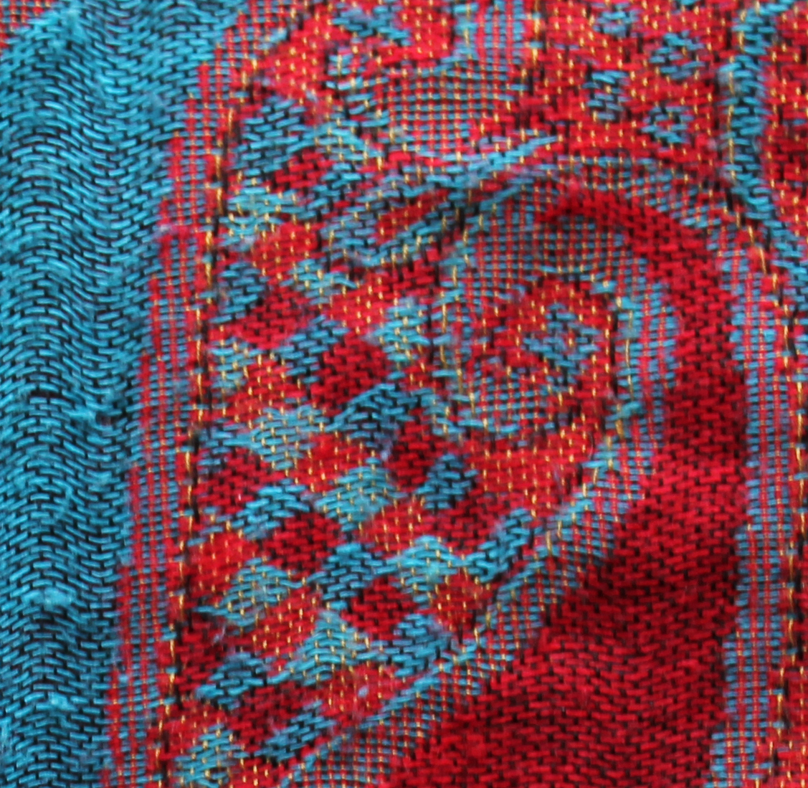
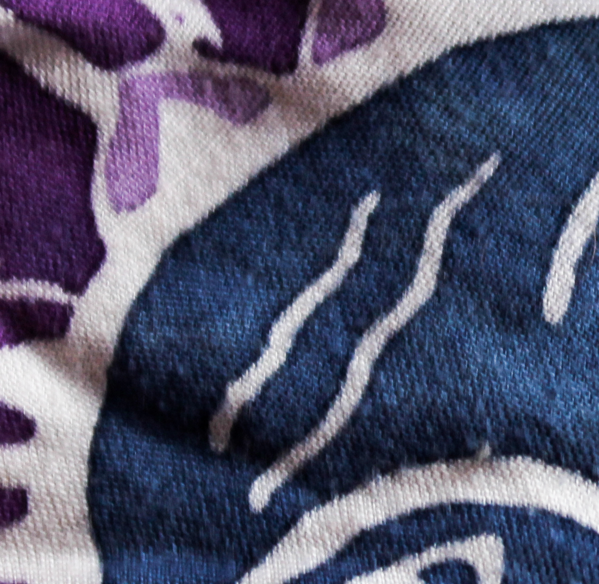

-

This scarf is red and blue, decorated in an assortment of forms and shapes creating a beautiful pattern, woven together with polyester.
Dimensions: 2ft x 4ft
-

This scarf is the exact same print as the red and blue, but with a more earthy toned color palette of green and bronze.
Dimensions: 2ft x 4ft
This beautiful scarf is decorated with sun and butterfly imagery. It is made out of linen with a tone of tiny little tassels hanging off the ends.
Dimensions: 3ft x 5ft
Solids
The “simplistic” scarves are all made out of different material, and created in a way that is mainly based off solid patterns.
-

This scarf is one of my favorites, because it was a gift from my grandfather in 2014. It's made out of cotton, and sports two different colors. The colors are a dark blue, and a light tan.
Dimensions: 4ft x 2ft

This scarf is also another one of my favorites, because my granmother had handmade this scarf for my 19th birthday. It's a tightly woven scarf created in a pattern of thick stripes.
Dimensions: 2ft x 2ft

This scarf is a plain black scarf from H&M. It is pretty bland, but it goes with literally anything!
Dimensions: 3ft x 10 in